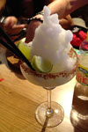

| Home The City Local Facts Travel Blogs Photo Gallery |
FoodTuscan food is simple and abundant with local produce, mellow cheeses and grilled meats. Tuscans are also known for their appreciation of beans as seen in the staple of the Tuscan table: white beans cooked with sage and olive oil. Beef Steak Florentine, many versions of roasted or wine-braised game such as boar, deer and rabbit and thick and hearty soups cover the table of a typical Tuscan meal. Plus this is the home of Chianti wine. The recipes in Florentine cookery range from the original and traditional to more recent arrivals and innovations. Such a wide and occasionally unusual choice of dishes has not only provided some fascinating historical and social information, but the assortment and variety of flavours, colours, customs and costs suited to all pockets, also offers a style of cooking which is lively and flexible. At the heart of Florentine cookery lie four fundamental ingredients: bread (plain, unsalted, well-baked with a crispy crust and light and airy inside); extra-virgin olive oil, without any doubt the best even for frying, grilled meat; Florentine steaks of beef, roasted or wine-braised game such as boar, deer and rabbit and lastly, wine itself.Florentine restaurants serve all the Italian specialities, not just the ones typical of Florence. Here are some personal reccomendations:Ristorante Pizzeria Il TeatroOn my study abroad trip, Il Teatro was the go to place for lunch. This restuarant has delicious dishes, both light and filling. My favorite part of the meal was always the bread because they make it at right at the restauarnt and it could not be more fresh. TijuanaIt may be strange to eat mexican food while you're in Italy, but this place is amazing. They have delicious tacos and giant maragaritas, which are actually pretty cheap during happy hour.  Gelateria Dei NeriHands down, Gelateria dei Neri is the best gelato I tatsed in Flornece! it changed my life! Secret BakeryIn Florence, it is illegal to sell pastries past a certain hour, but for those who know where to go, you can buy anything you want at any hour. Thoughout the city there are secret bakeries that sell to people at late hours. The rule is that you have to be quite or sometimes they won't sell to you. This is a link about the secret bakery I went to. |
Reference Links |